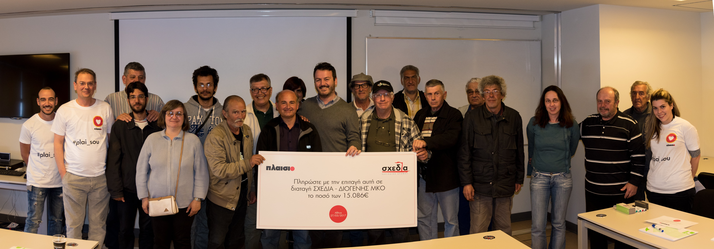
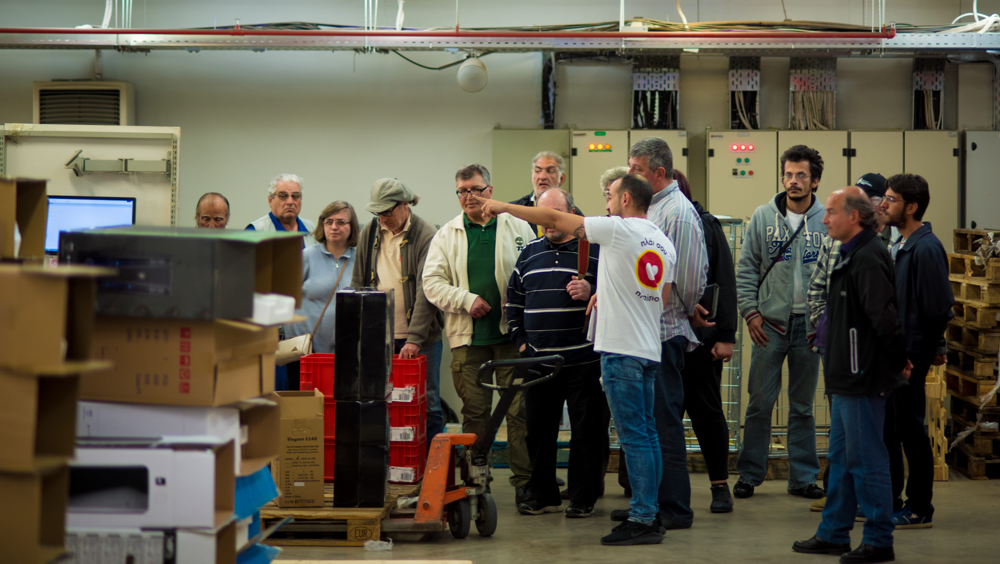

Μια «Σχεδία» σε κάθε Πλαίσιο!
Την περίοδο των Χριστουγέννων του 2016, τα καταστήματα Πλαίσιο σε Αθήνα & Θεσσαλονίκη έγιναν «προστατευόμενα» σημεία πώλησης του περιοδικού δρόμου «Σχεδία», με σκοπό την ενίσχυση και υποστήριξη αστέγων, ανέργων ή ανθρώπων με εισόδημα κάτω από το όριο της φτώχειας.
Αγοράζοντας ένα τεύχος από τη «Σχεδία», συμβάλαμε ενεργά στην ενίσχυση των πωλητών που ανήκουν στις παραπάνω κατηγορίες, καθώς τα μισά έσοδα πηγαίνουν απευθείας στους ίδιους. Παράλληλα, φιλοξενώντας «Μια σχεδία σε κάθε Πλαίσιο», προσφέραμε 1€ επιπλέον για κάθε τεύχος που πωλήθηκε στο διάστημα 16-24 Δεκεμβρίου, ενισχύοντας περαιτέρω το έργο της οργάνωσης.
Επιπλέον, το 2017 φιλοξενήσαμε τους πωλητές του περιοδικού στα γραφεία μας και διοργανώσαμε για εκείνους ένα διαδραστικό σεμινάριο. Σκοπός ήταν να αφουγκραστούμε όλοι τα προβλήματα που αντιμετωπίζουν, αλλά και να τους προτείνουμε τεχνικές πώλησης που μπορούν να τους φανούν χρήσιμες.